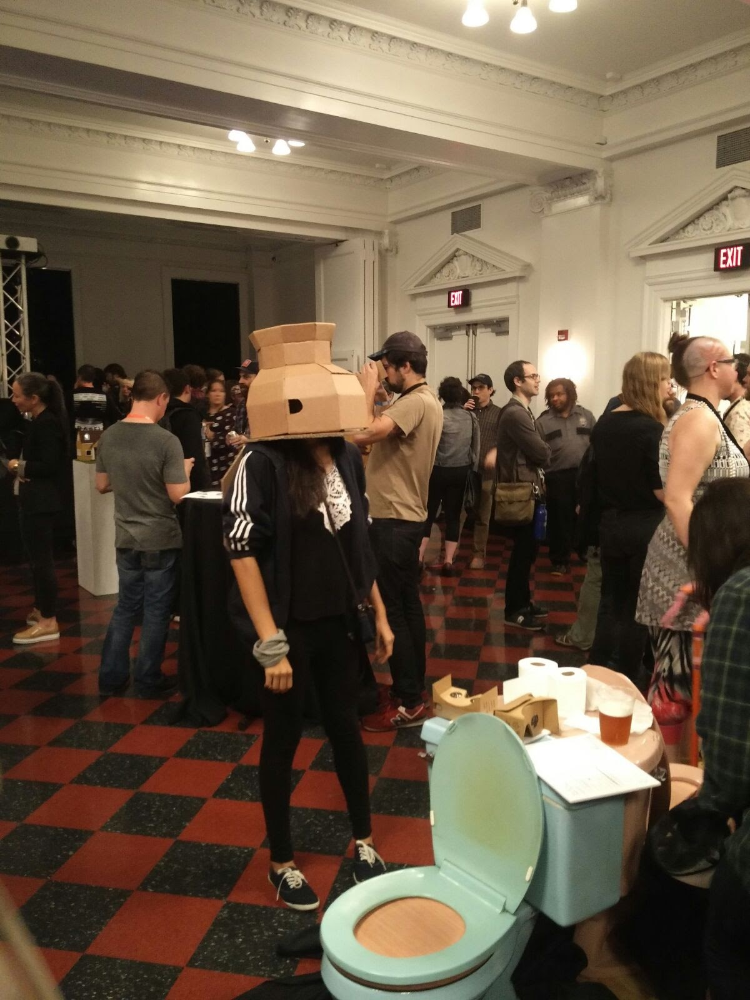

Weird With Code is the practice of Yasha Jain, a new media artist and creative technologist. She creates interactive installations, generative art, and experiments with live coding — drawing from programming, artificial intelligence, and human–computer interaction to explore how computational systems shape perception, control, and meaning in digital culture. She has exhibited in galleries, festivals, and experimental spaces around the world, using technology not just to automate, but to spark curiosity, reflection, and engagement. She lives in Karlsruhe, Germany, and works as an artist and researcher for the ZKM | Hertzlab. In her free time she plays the sitar, or goes for a hike.
Practice
- Interactive Installation
- Generative Art
- Live Coding
- Machine Learning
- Creative Technology
Currently
- Artist & Researcher
- ZKM | Hertzlab
- Karlsruhe, Germany
- Practising since 2016
Selected venues
- ZKM Karlsruhe
- Kamuna Festival
- Eyemyth Festival
- Berthold Leibinger Stiftung
- Stallwächter Party, Berlin
Contact
